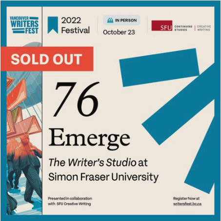

I have been a writer, consultant and community activist.
Public readings and artist fundraisers
Side panel illustration of people with books floating on their heads. A
red button says "Sold Out" Under the caption "76 Emerge- The Writer's
Studio Vancouver Writers Fest
Public Reading October 2022

I gave a reading of my work from Emerge 22, the self-published anthology
produced annually by the SFU Creative Writing department. I was one of 15
students from the 2022 cohort of The Writer’s Studio to read my work at
the Vancouver Writers Fest during the in-person book launch.
I was one of several artists featured in a fundraiser in May 2021 by
Threading Change for Asian Heritage Month. I read an excerpt of one of my
short stories, Buko, about Filipino diasporic identity explored through
cultural cuisines, with a sprinkle of romance.
The fundraiser proceeds benefitted organizations that advance anti-racism
policy, build educational capacity and increase the visibility of Asian
artists and change-makers in the community.